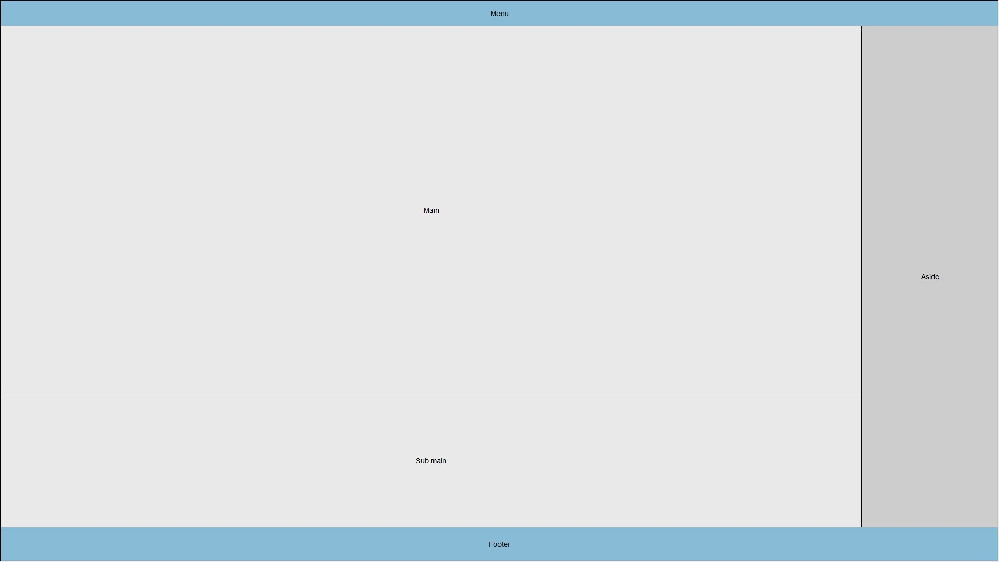

Layouts
Para o layout das nossas páginas utilizámos o layout demonstrado na imagem seguinte. Existe o menu no topo da página, um footer na parte de baixo da imagem e 3 secções principais na página, a secção "main" onde se encontra a informação mais relevante, a secção "sub main" que contem informação de revelo menor e a secção "aside" com informação compelmentar.
Em relação às técnicas utilziadas encontram-se descritas na tabela abaixo:
| Carateristicas | Elementos/técnicas | Exemplos |
|---|---|---|
| Layouts | Usou-se o CSS grid e CSS flexbox para construção de layouts | A grid utilizada nesta página |
| Responsividade | Foram usadas media queries que adaptam o layout para telemovel e PC consoante o tamanho da janela do browser. | Duas media queries criadas |
| Seletores | Foram usados seletores de paragrafo e listas | Os seletores de lista utilizados nas tabelas |
| Etiquetas | HTML5 main, header, article, footer, figure... | A etiqueta main usada para o corpo da inform«ção na página |